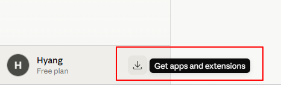
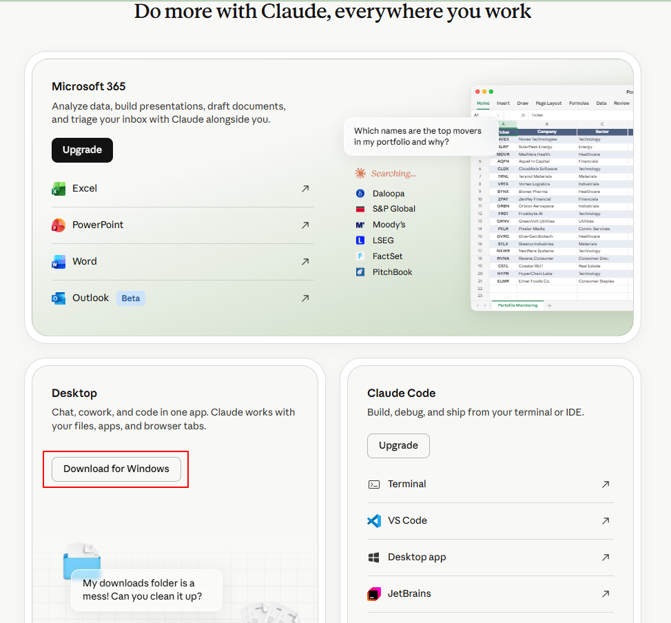
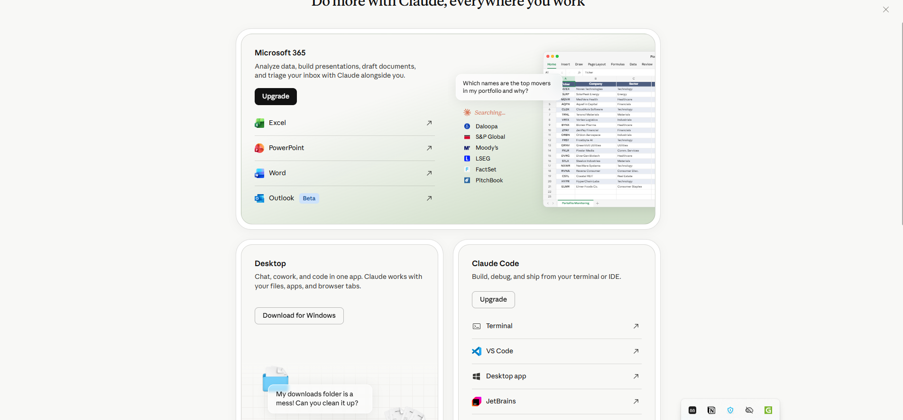

다운로드 페이지 접속
브라우저에서 claude.ai/download 에 접속합니다. 또는 Claude 웹 화면 좌측 하단 메뉴 → "Download the app"을 클릭합니다.

Claude-Setup-x64.exe · Windows 10/11
설치 파일 다운로드
"Download for Windows" 버튼을 클릭하면 Claude-Setup-x64.exe 파일이 다운로드됩니다.

다운로드가 완료되면 브라우저 하단 다운로드 바에서 파일을 확인하거나, 탐색기 → 다운로드 폴더에서 찾을 수 있습니다.
설치 파일 실행
다운로드된 Claude-Setup-x64.exe 파일을 더블클릭하여 실행합니다.

설치는 자동으로 진행되며 별도 설정이 필요 없습니다. 완료 후 Claude 앱이 자동으로 실행됩니다.
"Windows가 PC를 보호했습니다" 창이 뜨면:
1. "추가 정보" 링크 클릭
2. "실행" 버튼 클릭
설치가 정상 진행됩니다.
로그인 및 시작
앱이 실행되면 로그인 화면이 나타납니다. 가입 시 사용한 계정으로 로그인합니다.

로그인 완료 후 바로 Claude와 대화를 시작할 수 있습니다!
단축키 설정 및 활용
데스크탑 앱은 전역 단축키로 어디서든 빠르게 열 수 있습니다.

기본 단축키 (Windows):
Alt + Space → Claude 창 열기/닫기
빠른 질문
단축키 한 번으로 즉시 질문 입력 가능
클립보드 연동
복사한 텍스트를 바로 붙여넣어 분석 요청
알림 지원
긴 작업 완료 시 데스크탑 알림으로 안내
다크 모드
시스템 설정에 따라 자동 전환
다운로드 페이지 접속
브라우저에서 claude.ai/download 에 접속하거나, Claude 웹 화면 좌측 하단 메뉴 → "Download the app"을 클릭합니다.
Claude.dmg · macOS 12 Monterey 이상
DMG 파일 다운로드
"Download for Mac" 버튼을 클릭하면 Claude.dmg 파일이 다운로드됩니다.

다운로드가 완료되면 Finder → 다운로드 폴더에서 Claude.dmg를 확인합니다.
DMG 열기 및 앱 설치
Claude.dmg 파일을 더블클릭하면 설치 창이 열립니다.
Claude 아이콘을 Applications 폴더 아이콘 위로 드래그합니다. 복사가 완료되면 설치가 끝납니다.
"확인되지 않은 개발자" 경고가 뜨는 경우:
시스템 환경설정 → 개인 정보 보호 및 보안 → "확인 없이 열기" 클릭
또는 앱을 우클릭 → "열기"로 실행하세요.
앱 실행 및 로그인
Launchpad 또는 Applications 폴더에서 Claude 앱을 실행합니다.

가입 시 사용한 계정으로 로그인하면 바로 사용할 수 있습니다!
단축키 설정 및 활용
데스크탑 앱은 전역 단축키로 어디서든 빠르게 열 수 있습니다.
기본 단축키 (macOS):
⌥ Option + Space → Claude 창 열기/닫기
빠른 질문
단축키 한 번으로 즉시 질문 입력 가능
클립보드 연동
복사한 텍스트를 바로 붙여넣어 분석 요청
알림 지원
긴 작업 완료 시 macOS 알림으로 안내
다크 모드
시스템 설정에 따라 자동 전환